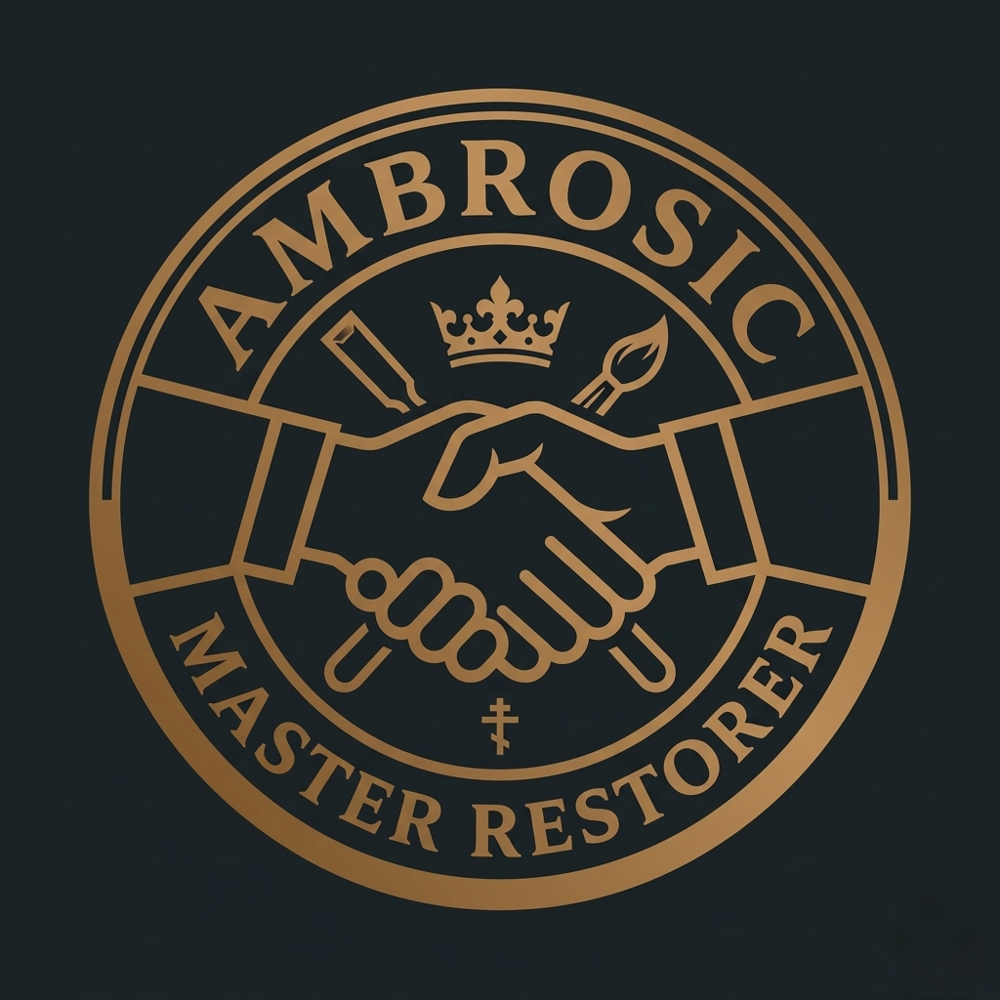

CONTACT
THIRD GENERATION · SORBONNE · 20+ YEARS · EUROPE
Start a direct conversation.
For restoration, archive access, consultation and partnership inquiries, contact the independent studio directly.

THE LEGACY · FOUNDED 1960
One uncompromising standard.
Restoration is a responsibility. The work protects original material, records what is known and makes every decision legible for the people who come next.